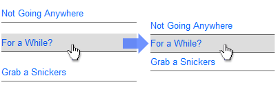

Sometimes, when I’m building a vertical navigation menu (like the one pictured above), Internet Explorer 6 will fight with me in a fairly annoying way: it adds a bunch of white space between the list items (specifically, I think it’s adding space below each list item). This space isn’t a margin, and it isn’t padding… it’s just empty, un-selectable space. So what’s going on, and how do we fix it?
The “what’s going on” part is simultaneously simple and perplexing: IE6 is treating all the empty space inside of your HTML lists – that is, the stuff between your closing </li> and next opening <li> tag — as real space. That’s the simple part. The confusing part is, why would it choose to interpret this space as “real,” when it ignores all of the other space between tags in pretty much every other situation out there? Well, that’s just IE6 for you, and that’s the perplexing bit.
Luckily, there is a really easy solution to this problem. Actually, truth be told, there are several solutions. Depending on your situation, each might be the right fix for you.
Fix #1: Remove All Whitespace
This is the most arcane of all the solutions, but to be honest, it’s the one I’ve used most often in the past – because I didn’t know about the other solutions! If you remove the white space from your code, this prevents IE from having anything to screw up. Specifically, if you remove the white space between your closing list item and the next opening list item, and your last closing list item and the end of your list, this will fix the problem. So you just need to turn this:
<ul>
<li><a href="#">First Item</a></li>
<li><a href="#">Second Item</a></li>
<li><a href="#">Third One!</a></li>
</ul>
Into this:
<ul>
<li><a href="#">First Item</a></li><li>
<a href="#">Second Item</a></li><li>
<a href="#">Third One!</a></li></ul>
Like I said, this isn’t exactly an elegant solution. But it does work, and it can be useful in places when CSS isn’t entirely reliable (like in HTML emails).
Fix #2: Float the Anchor Tags
Jon Hicks popularized this fix years ago. Basically, you float the anchor tags left, and then clear them left as well, like so:
ul a {
display: block;
float: left;
clear: left; }
This causes your links to behave like floated elements, which naturally don’t have any space between them. Unfortunately, it also prevents your links from filling all the horizontal space available, which would make a mess of the example I used above, because I’m relying on that width to create a background color and a border. However, if your links don’t have any fancy hover states or borders, this solution would work just fine.
Fix #3: Apply a Bottom Border
Another useful solution is to apply a border to your list item. Why does this work? I have no idea. Does a border just anywhere work? Nope. It has to be applied to the bottom of the list item (or to all four sides, as long as the bottom is included):
ul li {
border-bottom: 1px solid #666; }
I suppose the logic on this one is that the space is on the bottom of the element, so specifying a definitive edge to the box causes IE6 to recognize the “real” end of the element. Whatever the reasoning, it works, and it’s a good solution if you don’t mind a pixel of extra space in between your elements in return for getting rid of the great swaths of space IE had introduced. And sometimes it even works in the design. In the image above, for example, the border between the items could just as easily be applied to the list item instead of the anchor (which is where I had placed it initially).
Fix #4: Use Display: Inline
In my experience, the most useful solution of the four is to force your list items to display inline, instead of as a block-level element (which they are by default):
ul li {
display: inline; }
As far as I can tell, this technique was first popularized by Andy Budd waaay back in 2003 (of course, he was dealing with IE5 back then). I like this solution because it seems to do the least harm to my lists. It doesn’t add any additional space that I need to account for. It also doesn’t harm the size of my anchor tags: if I apply a “display: block” to my anchors, like I’ve done in the image above, my anchor will stretch out the “inline” list item to its standard size.
Any of these solutions will remove the extra space from between list items in IE6. The key is simply to pick the fix that works best with your particular design.
You can also put a space between the list text and the closing anchor tag, like this:
First Item
Second Item
Third One!
Let’s try that again:
<ul>
<li><a href="#">First Item </a></li>
<li><a href="#">Second Item </a></li>
<li><a href="#">Third One! </a></li>
</ul>
Great to know, Derek! That makes for a total of five useful techniques to solve one very annoying bug. I love it when I get to learn new things just from writing articles. :) Thanks for sharing!
I think you meant vertical menus, no?
But I do get the same issue in horizontal menus as well. Will any of these techniques work on those? (Apart from eliminating white-space between the tags, that is.)
Thanks for all your work. I help teach a beginner web design course, and often cite your clear explanations when students get stuck.
Ooh, you’re right, David. Thanks for noticing that. I’ve fixed it in the article.
I’m not sure if the same bug would cause problems in horizontal menus or not. Anyone else know for sure? I’d almost expect that to be more of a double margin bug than anything else.
Where do you teach your course? I’m finishing up a beginning web design course here in Des Moines. I’m glad to know the site is proving useful!
Thanks. I was suicidal, but your article saved me. Made list elements display: inline; and corrected the bug.
I would also like to add that the first fix fixes the IE6 bug where it would put a invisible border onto the bottom of images.
I was searching for a solution to my problem when I came across this, though I’d give the fist solution a try and low and behold it worked.
Thanks.
I believe I’ve had the same problem in the past and I thought it was because the list items have a default margin and/or padding. So when I set the margin and padding to O it fixed it.. but I haven’t done it in a while, so I might be wrong.
BTW, nice website. I’m a graphic design intern at Workbench magazine.
Hey – GREAT info here! This is a pet peeve of mine as well! Great fix – that “inline”.
I just experienced this bug in IE7! I thought this was a problem only for IE6 and prior. Crazy. Has anyone else seen it in 7?
I quickly added the extra space behind each list element and the problem disappeared. Haven’t tried the other solutions yet.
Thanks for the article, Rob! I remembered seeing it a while ago and knew right were to go when I saw this problem.
Hi Scott,
Yeah, this is still a problem in IE7. I run into it fairly often when I’m developing HTML emails. :)
Glad the article helped!
Easier, sure-fire solution:
add “zoom:1;” to your li tags’ CSS. Try it. It works. :) It’s just a way to enable the “hasLayout” property, a proprietary Microsoft concept in IE6/7 . Check out more info here http://www.satzansatz.de/cssd/onhavinglayout.html
Hope that helps…
Hi Rob,
It seems to be not just a IE problem. I have cut back code to essentials and have it happening in both firefox and IE.
Condensing the code seems to be the best option for me although I resent that I have to do it!
See http://localhost/testing/amr_cssmenu/Tabmenubasic.html
The ‘zoom:1′ solution is not validate CSS.
it is small trick from me
ul li {
border-bottom: 1px solid #ffffff;
display:block;
margin-bottom: -1px;
margin-top: 0px;
margin-left: 0px;
margin-right: 0px;
}
you can give – margins. it does the job// :)
Thank you :-)
I had no idea what was going on, but the ‘display:inline’ did the trick!
Thank you for this help not only has it solved my problem but has given me more knowledge on how to beat the problems caused by IE.
Thank you
Hey Rob, great stuff. I can only hope that IE6 picks up the pace of it’s own death, but until then, articles like this are extremely useful. Thanks for taking the time write it.
Rob, all the above solutions have either HTML semantic issues or don’t really solve the problem completely.
#1, like you said, not elegant.
#2, yes, the space is fixed but you actually lose the ‘block’ value created by the ‘display:block;’ property. In other words, in vertical menus, if your links are as wide as the column/menu, they become normal elements, not ‘block’ elements.
#3, same as #1, only on steroids, not to mention adding a border may not be a design approach many may have… what if there’s a gradient background?… See?
#4, like #2, it does remove the line, but it also removes the padding on the second link and below. ie: If you have a list of links with an image of a bullet as a background (to replace the regular HTML • used by unordered lists), then only the first link keeps the padding on the left to be able to display the bullet image, but the rest of the links loose that padding.
I hope that makes sense, it’s hard to explain in words :p
Now, the solution provided in the 1st/2nd post by Derek, has the same issues as #1 and #3. In addition, as long as YOU are updating the list, then ok, YOU/I can add the space at the end of the items, but I needed to deliver a template to a client and he doesn’t know HTML (and certainly is NOT capable of handling issues of the nature we are discussing here… he’s a client after all), so all he’s going to do is add a new link and that’s it, it should work for him right then and there.
–
There is a 100% semantics, elegant and CSS valid solution:
* html li a {display:inline-block;}
* html li a {display:block;}
For those purists out there, the * html property IS NOT a hack, hacks are not valid and the * html IS valid.
For those that don’t know what the * html is or does, it means that it only works for IE6, any other browser will ignore this property.
And no, I did not came up with this solution, I found it online, the author is Roger Johansson, I only modified his code from using Conditional Comments to use the * html property, which I think is a lot easier to do, maintain and it’s more scalable.
Here’s the author’s page: http://www.456bereastreet.com/archive/200610/closing_the_gap_between_list_items_in_ie/
Very nice article nonetheless.
Thank you.
Our CMS outputs pretty tight, well optimised code so this was only ever a bug we had during the design phase, when we wrote the template code by hand.
BUT, since a recent upgrade our CMS is outputting lovely, easy-to-read code…. that creates a white-space problem in IE6!
Thanks for the tips, we’ll try these out!
DISPLAY AS INLINE-BLOCK IN CSS THEN SET WIDTH / HEIGHT OF EACH LINK!!!!
mooreeka!
Ricardo Zea, cheers for the ‘inline-block’ tip. That surely fixed the problem which has been giving me an headache for the last 2hrs.
Thank you!
I’ve searched for days, and I couldn’t explain this strange behaviour!
And now there is this simple solution!
Awesome article…definitely tagging this one. Thanks!
I don’t care for validation (I think it’s a waste of time aside from helping one catch errors during the development process). So, I sometimes use zoom:1 for IE bugs. But in this case, this didn’t help me. display:inline did, though. Thanks!
Thanks! #4 solved my issue.. #1-#3 didn’t work for me.
Pingback: [译]IE6终极备忘单：修复IE6下 25+ Bugs - vfresh
None of these work for me. Anybody willing to give me a hand? I will send you the code.I am using Dreamweaver CS3
Ron, go here, this is the way to solve this problem: http://www.456bereastreet.com/archive/200610/closing_the_gap_between_list_items_in_ie/
I use this method every time.
If you’re having problems try to validate your HTML to be sure there aren’t any syntax errors.
This solution is pretty straight forward.
Still not working. How would I check for syntax errors?
With the W3C HTML validator: http://validator.w3.org/
Post a URL of your code, I can check it out when I have a free moment if you want.
http://www.mannamission.ca/take52009.html
I tried the validator and it found 38 errors!! I’m not sure how to fix them. What I would really like os to get rid of the whitespace. Take a look if you have the time…
Oooohh! Your problem is not what this blog post is about, I just looked at your CSS code.
You problem is the “height:240px;” in the #menuinner selector:
#menuinner {
height:240px;–> REMOVE THIS RULE
overflow:visible;
position:relative;
visibility:visible;
width:900px;
z-index:auto;
}
Let us know how it goes.
***
To the owner of this blog, Rob Glazebrook:
I think you should delete these posts (of course, after Ron has fixed his problem), they are not related in any way to the subject discussed here.
Pingback: IE6终极备忘：修复IE6下 25+ Bugs(转) « 前端工作室(We are UEDs,专注于前端开发和用户体验设计)
Pingback: Mike Capson » Blog Archive » A Full-Width Centered Navigation Bar
Pingback: Saint John Web Design | Informative Computer Solutions » Blog Archive » How To Emulate a Foreach Loop in JavaScript
Pingback: Saint John Web Design | Informative Computer Solutions » Blog Archive » Improve Usability and CTR: Make an Entire List Item Clickable
Thank you for such an easy answer, or rather, four easy answers to this annoying bug. I went with a float fix and floated the parent elements as well. Also, to ensure the anchor filled the width, I set a width parameter and all was back to normal!
Pingback: IE’de Liste elemanları arasındaki boşluk sorunu « Çöp Evim
Pingback: fireguns.net» Blog Archive » [转][译]IE6终极备忘：修复IE6下 25+ Bugs
Pingback: [译]IE6终极备忘：修复IE6下 25+ Bugs | 无想
Pingback: Nethizmet Online kütüphanesi
Pingback: [译]IE6终极备忘单：修复IE6下 25+ Bugs | 艺创科技
Pingback: webstalk.net » Blog Archive » Ultimate IE6 Cheatsheet: How To Fix 25+ Internet Explorer 6 Bugs
Awesome. Works fine, thank you. :)
Pingback: 修复IE6下众多常见bug办法汇总 | 壹品集
Pingback: [译]IE6终极备忘：修复IE6下 25+ Bugs
Pingback: Borba sa Internet Explorerom | Nenad Božidarević
Pingback: 25 IE6 Bugs | Entevava.com
Nice css fix , See more css tricks on Discoverweb